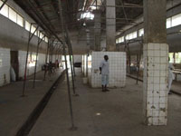

|
|
Policing & Justice in NigeriaDespite repeated government pledges to address the problems in the Nigerian criminal justice system, little progress has been made. The vast majority of recommendations made in previous years by two presidential commissions, the UN special Rapporteur on extrajudicial, summary or arbitrary executions and the UN Special Rapporteur on torture have yet to be implemented. In 2009, seven out of 10 inmates in prison were pre-trial detainees. Many had been held for years awaiting trial in appalling conditions. Few can afford lawyers and the government-funded Legal Aid Council has fewer than 100 lawyers in the country. Police Brutality The Nigeria Police Force (NPF) is responsible for hundreds of extrajudicial executions, other unlawful killings and enforced disappearances every year. The majority of cases go uninvestigated and unpunished. The families of the victims usually have no recourse to justice or redress. Many do not even get to find out what exactly happened to their loved ones. Click image to enlarge ©Private - Chibuike Anams, a 23 year old student, shot dead when police raided a guesthouse. His family reported him missing immediately and did not hear of his death until a week later. His body has not been released to his family and no investigation has taken place. The police exploit public anger at the high crime rates in the country to justify their actions. They often claim that the victim was an armed robber killed in a shootout or while trying to escape police custody. Police Force Order 237 permits officers to shoot suspects and detainees who attempt to escape or avoid arrest. In practice, it lets the police get away with murder. The police do not only shoot people. Amnesty International has recorded cases of suspects who were tortured to death while in detention. In other cases, people are victims of enforced disappearance; the police tell the families that that they were transferred to a different police station or released on bail, but have no documentation to confirm it. In most instances, officers' accounts are unchallenged and complaints are unprocessed. Investigations are rarely carried out. When investigations do take place, they do not comply with international standards. The few police officers who are suspected of extrajudicial executions are sent on training or transferred to other states instead of being prosecuted. Disregard for human rights is prevalent within the police force. Detainees are often denied their legal right to see a lawyer. Many have to pay for food or medical care, or to avoid being tortured or otherwise ill-treated. In many cases, detainees wait for weeks or months in police custody to be charged and brought before a court. Amnesty International documented 29 cases of victims of enforced disappearances and extrajudicial executions who had never appeared before a judge. Click image to enlarge ©Amnesty International - A Nigeria Police Force (NPF) officer wearing a vest that says 'Police is your friend' whilst holding an assault rifle, Nigeria, 27 October 2008. Extrajudicial executions, other unlawful killings and enforced disappearances in Nigeria are not random. In a country where bribes guarantee safety, those who cannot afford to pay are at risk of being shot or tortured to death by the police. The families of the victims often cannot afford to seek justice or redress, because they cannot pay for a lawyer or the court fees. In many cases, they cannot even afford to retrieve the body. The police are also affected by a severe shortage of funds. Only a fragment of the NPF annual budget reaches state and local police stations and the lack of funding and resources contributes to many of the failures within the police force. Police officers work without basic equipment and sometimes make crime victims pay for petrol and stationery necessary to conduct the investigation. In these conditions, corruption quickly becomes the norm. The Nigerian government has repeatedly expressed willingness to address the problems in the criminal justice system, improve access to justice and reform the NPF. Despite several review panels in recent years, which presented detailed recommendations for improvement, little has been done. A review of the Police Act (1990) began in 2004, but the draft bill has been pending since October 2006. Laws, regulations and codes of conduct to protect human rights are not enforced. The difficulties of ending extrajudicial executions and other unlawful killings in Nigeria are considerable, but not insurmountable. Any plan to address the situation must focus on establishing a culture of respect for human rights within the NPF; it must ensure that victims and their families have access to justice, and put an end to impunity for police officers. This is the only way to guarantee that changes to the law are effective. Click image to enlarge ©Amnesty International - "The Abattoir", home of the Special Anti Robbery Squad (SARS), a notorious police station in Abuja, located on the site of a disused abattoir, Federal Capital Territory, Nigeria, July 2009. Read more: Amnesty International "Killing at Will: Extrajudicial Executions and Other Unlawful Killings by the Police in Nigeria" Death Penalty The approximate 860 men and 11 women on death row in Nigeria's prisons have one thing in common, beyond not knowing when they will be put to death. They are poor. From their first contact with the police, through the trial process, to seeking pardon, those with the fewest resources are at a serious disadvantage in Nigeria's criminal justice system. And some will pay with their life. Some death row prisoners were arrested when they went to a police station because they knew a suspect or had witnessed a crime. Many said the police rounded them up and then demanded money for their release. Sometimes police asked for money for fuel, without which they could not go and see witnesses or check alibis. Overstretched and under-resourced, the police rely heavily on confessions rather than investigations. And in many cases they use torture to force suspects to sign these statements. More than half of all the death row prisoners in Nigeria were sentenced to death on the basis of a confessional statement. Some tried to challenge the statement in court, but the trial judge refused to believe them when they said they had been tortured and insisted that the statement should stand. Some death row prisoners had no lawyer at all - others said that their lawyer either did not argue their case, or was silenced by the trial judge. Often, lawyers were not allowed to see documents vital to the case until the trial started. Read more: Amnesty International "Waiting for the Hangman" For technical details relating to the geospatial analysis presented on this site, visit the website of the American Association for the Advancement of Science. |
||
| © Copyright 2011 Amnesty International USA |


{kind=link}
{kind=link}
{kind=link}